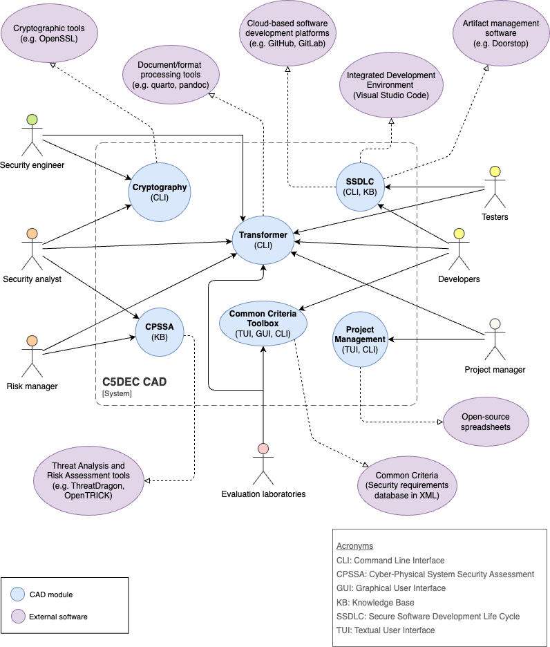
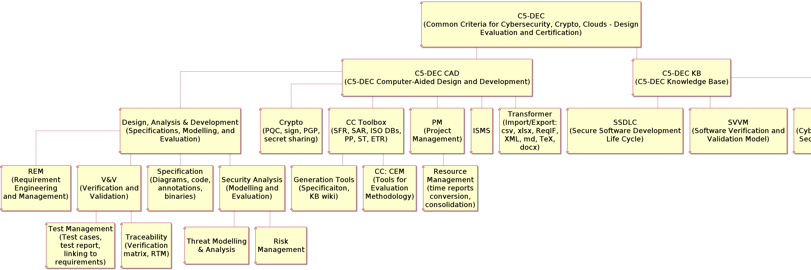
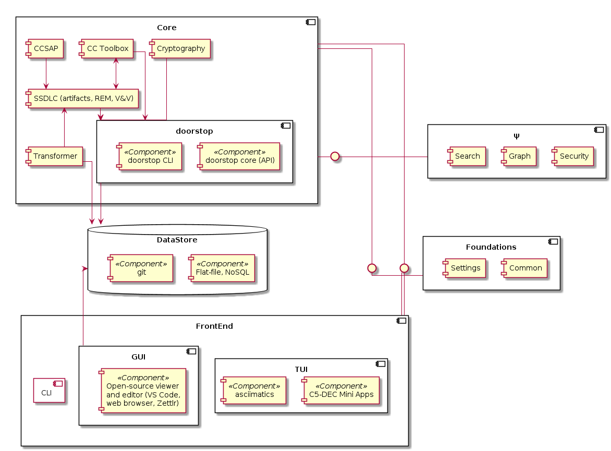
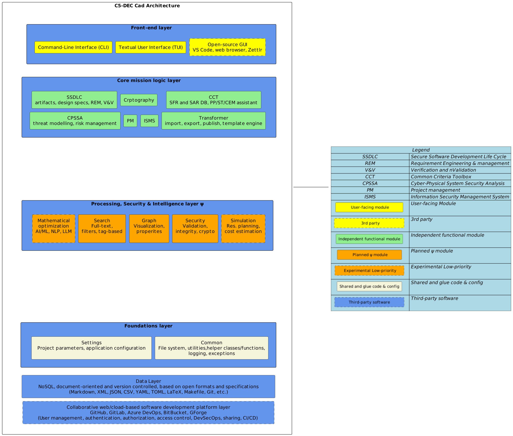

1.0 C5-DEC CAD context diagram ARC001
Diagram
The C5-DEC CAD system is divided into five modules providing diverse functionality for different kinds of users. These modules interact with and/or build upon external open-source tools to provide an integrated CAD solution.

Parent links: MRS-058 Follow modular design
2.0 C5-DEC CAD functional tree ARC002
Diagram
The diagram below depicts the functional tree of C5-DEC CAD.

Parent links: MRS-012 Testing framework integration, MRS-014 Project management feature, MRS-015 Time report consolidation, MRS-016 ISMS folder verification, MRS-026 Baseline module implementation, MRS-058 Follow modular design
3.0 C5-DEC CAD subsystems architecture ARC003
Diagram
The diagram below depicts a view of the C5-DEC CAD subsystems.

Parent links: MRS-001 Diagram generation tool, MRS-002 Unified repository storage, MRS-003 Open file format, MRS-004 Unique artifact IDs, MRS-005 Requirements management tool, MRS-006 Artifact linking feature, MRS-009 Requirement hierarchies, MRS-010 Requirements traceability, MRS-011 V&V test features, MRS-017 Import/export artifacts, MRS-026 Baseline module implementation, MRS-027 Link requirements to code, MRS-028 Search and filter, MRS-031 Threat modelling solution, MRS-033 Threat modelling tool, MRS-034 Export design assets, MRS-035 Risk management tool, MRS-048 Include SDPM model, MRS-049 Include VVPM model, MRS-050 Include SPMM model, MRS-051 Include SSDLC publication, MRS-052 Include CC model, MRS-053 Include CC-TMM, MRS-054 Include SRA model, MRS-055 Define CC activities, MRS-056 Use NoSQL datastore, MRS-058 Follow modular design
Child links: SWD001 CCT class diagram, SWD002 C5-DEC CAD classes, SWD003 C5-DEC CAD packages, SWD004 C5-DEC CCT data model part 1, SWD005 C5-DEC CCT data model part 2, SWD006 C5-DEC CCT Doorstop metadata, SWD007 C5-DEC CCT Doorstop Markdown body, SWD008 C5-DEC CCT security functional class, SWD009 C5-DEC CCT security assurance class, SWD010 C5-DEC CCT element operations, SWD011 C5-DEC CCT CEM evaluation activities, SWD012 C5-DEC CCT sec. assurance and eval. act. dependencies, SWD013 C5-DEC CCT generic Doorstop document, SWD014 C5-DEC CCT security target data model
4.0 C5-DEC CAD system architecture ARC004
Diagram
The diagram below depicts the high-level architecture of C5-DEC CAD.

Parent links: MRS-001 Diagram generation tool, MRS-002 Unified repository storage, MRS-003 Open file format, MRS-005 Requirements management tool, MRS-007 Version control system, MRS-008 Use Git software, MRS-011 V&V test features, MRS-013 Artifact tagging, MRS-018 Collaboration feature, MRS-019 User management, MRS-020 User authentication, MRS-021 User authorization, MRS-022 Access control levels, MRS-023 Web-based asset sharing, MRS-026 Baseline module implementation, MRS-029 Filter by tags, MRS-033 Threat modelling tool, MRS-034 Export design assets, MRS-035 Risk management tool, MRS-056 Use NoSQL datastore, MRS-057 Use web dev platform, MRS-058 Follow modular design, MRS-059 Enforce user management
Child links: SWD001 CCT class diagram, SWD002 C5-DEC CAD classes, SWD003 C5-DEC CAD packages, SWD004 C5-DEC CCT data model part 1, SWD005 C5-DEC CCT data model part 2, SWD006 C5-DEC CCT Doorstop metadata, SWD007 C5-DEC CCT Doorstop Markdown body, SWD008 C5-DEC CCT security functional class, SWD009 C5-DEC CCT security assurance class, SWD010 C5-DEC CCT element operations, SWD011 C5-DEC CCT CEM evaluation activities, SWD012 C5-DEC CCT sec. assurance and eval. act. dependencies, SWD013 C5-DEC CCT generic Doorstop document, SWD014 C5-DEC CCT security target data model